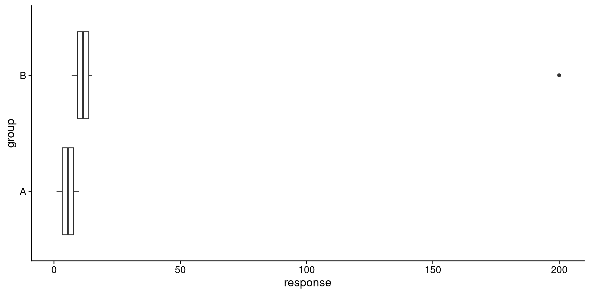

Code
| A | B |
|---|---|
| 1 | 7 |
| 2 | 8 |
| 3 | 9 |
| 4 | 10 |
| 5 | 11 |
| 6 | 12 |
| 7 | 13 |
| 8 | 14 |
| 9 | 15 |
| 10 | 16 |
ENVX1002 Introduction to Statistical Methods
The University of Sydney
Apr 2024
Depends on the assumption that the data is normally distributed with mean \mu and standard deviation \sigma ,e.g. t-test, ANOVA, linear regression.
Do not make any assumptions about the distribution of the data.
Uses other properties e.g. ranking of the data, e.g. Wilcoxon signed-rank test, Mann-Whitney U test, Kruskal-Wallis test.
For the Wilcoxon signed-rank test suppose we have the following data:
| sample: | 12 | 10 | 8 | 6 | 4 | 10 | 8 | 6 | 10 |
|---|
We arrange the data in ascending order (similar values are given the same colour for illustration):
| ordered: | 4 | 6 | 6 | 8 | 8 | 10 | 10 | 10 | 12 |
|---|
Then, we rank the data:
| ordered ranks: | 1 | 2 | 3 | 4 | 5 | 6 | 7 | 8 | 9 |
|---|
Finally, ranks that are tied are given the average rank:
| final rank: | 1 | 2.5 | 2.5 | 4.5 | 4.5 | 7 | 7 | 7 | 9 |
|---|
These ranks are then used to perform the test, instead of the original data.
Consider two sets of identical data that compares between a group A and B, where one contains an outlier.
Data:
Without the outlier, the data would have been normally distributed.
df <- data.frame(
group = rep(c("A", "B"), each = 10),
response = c(1, 2, 3, 4, 5, 6, 7, 8, 9, 10,
7, 8, 9, 10, 11, 12, 13, 14, 15, 16))
df_with_outlier <- data.frame(
group = rep(c("A", "B"), each = 10),
response = c(1, 2, 3, 4, 5, 6, 7, 8, 9, 10,
7, 8, 9, 10, 11, 12, 13, 14, 15, 200))
ggplot(df, aes(x = response, y = group)) +
geom_boxplot()The same data, but with a single outlier in group B:
If we perform t-tests on both data sets, we get the following results:
Welch Two Sample t-test
data: response by group
t = -4.4313, df = 18, p-value = 0.0003224
alternative hypothesis: true difference in means between group A and group B is not equal to 0
95 percent confidence interval:
-8.844662 -3.155338
sample estimates:
mean in group A mean in group B
5.5 11.5 Results indicate that there is a statistically significant difference between the two groups (t18 = -4.4, p < 0.05).
Welch Two Sample t-test
data: response by group
t = -1.2882, df = 9.0461, p-value = 0.2297
alternative hypothesis: true difference in means between group A and group B is not equal to 0
95 percent confidence interval:
-67.21615 18.41615
sample estimates:
mean in group A mean in group B
5.5 29.9 Results indicate that the two groups are not significantly different (t18 = -2.1, p = 0.23).
The real difference between the two groups is obscured by the outlier. Type II error (false negative)?
library(tidyverse)
library(gt)
df <- tibble(
parametric = c("One-sample t-test", "Two-sample t-test", "ANOVA", "Pearson's correlation"),
non_parametric = c("Wilcoxon signed-rank test", "Mann-Whitney U test", "Kruskal-Wallis test", "Spearman's rank correlation"))
gt(df) %>%
cols_label(parametric = "Parametric tests", non_parametric = "Non-parametric counterpart") %>%
tab_options(
table.font.size = px(24),
column_labels.font.weight = "bold")| Parametric tests | Non-parametric counterpart |
|---|---|
| One-sample t-test | Wilcoxon signed-rank test |
| Two-sample t-test | Mann-Whitney U test |
| ANOVA | Kruskal-Wallis test |
| Pearson's correlation | Spearman's rank correlation |
All of the non-parametric techniques above convert the data into ranks before performing the test.
Note
We will focus on the Wilcoxon signed-rank test and the Mann-Whitney U test.
Altenrative to the one-sample t-test and the paired t-test.
The Wilcoxon signed-rank test is a non-parametric test used to compare two related samples, matched pairs, or repeated measures on a single sample.
Is an alternative to:
Basically, used in same situations as the one-sample or paired t-test, but when the data is not normally distributed but still symmetric.
If comparing two groups, the ranks are calculated as follows:
Note
See Slide 5 to recall how ranks are calculated, but we will show another example in the next slide.
We measured weight gain in chickens before and after a diet.
| chicken | weight | weight_after |
|---|---|---|
| 1 | 2.5 | 4.0 |
| 2 | 3.5 | 5.0 |
| 3 | 3.5 | 5.0 |
| 4 | 3.4 | 4.6 |
| chicken | weight | weight_after | D | Sign | rank | Signed rank |
|---|---|---|---|---|---|---|
| 1 | 2.5 | 4.0 | 1.5 | + | 3 | 3 |
| 2 | 3.5 | 5.0 | 1.5 | + | 3 | 3 |
| 3 | 3.5 | 5.0 | 1.5 | + | 3 | 3 |
| 4 | 3.4 | 4.6 | 1.2 | + | 1 | 1 |
Note
The order of the ranks is based on the absolute values of the differences; the signs are assigned afterward.
Is there a significant increase in weight gain after the diet?
H_0: \mu_{\text{before}} = \mu_{\text{after}} H_1: \mu_{\text{before}} < \mu_{\text{after}}
In words:
Alternatively, since the data is paired, we may also consider hypotheses based on the differences between the two groups:
H_0: \mu_D = 0 H_1: \mu_D > 0
where D is the difference between the two groups.
With so few data points, we may want to use a formal test to check for normality.
Shapiro-Wilk normality test
data: df$weight_after - df$weight
W = 0.62978, p-value = 0.001241Results indicate that the data significantly deviates from normality (W = 0.63, p < 0.05). We will use the Wilcoxon signed-rank test.
wilcox.test(x = df$weight_after, y = df$weight, # data must be x - y
alternative = "greater", # because we are testing for an increase
paired = TRUE) # because the data is paired
Wilcoxon signed rank test with continuity correction
data: df$weight_after and df$weight
V = 10, p-value = 0.04449
alternative hypothesis: true location shift is greater than 0where V is the sum of the signed ranks.
The results indicate that there is a significant increase in weight gain after the diet (V = 10, p < 0.05).
Researchers investigated differences in beetle consumption between two size classes of eastern horned lizard (Phrynosoma douglassi brevirostre)
Focusing on just the smaller size class (for now) – it was hypothesised that this size class would eat a minimum of 100 beetles per day.
Does the average smaller size class lizard eat about 100 beetles per day?
H_0: \mu = 100 H_1: \mu \neq 100
Is it normally distributed?
The Wilcoxon signed-rank test for one sample can be performed as follows:
beetle %>%
filter(SIZE == "small") %>% # filter only the smaller size class
pull(BEETLES) %>% # convert to a vector using pull()
wilcox.test(mu = 100) # wilcox.text(x, mu)
Wilcoxon signed rank test with continuity correction
data: .
V = 92, p-value = 0.09755
alternative hypothesis: true location is not equal to 100Results indicate that the average number of beetles consumed by the smaller size class lizard is not significantly different from 100 (V = 92, p = 0.1).
Important
We are unable to make a conclusion about effect size from non-parametric tests as the information is lost when the data is transformed into ranks.
Alternative to the two-sample t-test.
Also called the Mann–Whitney–Wilcoxon (MWW/MWU), Wilcoxon rank-sum test (what R calls it), or Wilcoxon–Mann–Whitney test.
Researchers investigated differences in beetle consumption between two size classes of eastern horned lizard (Phrynosoma douglassi brevirostre)
We will now compare the number of beetles consumed by the larger and smaller size classes of lizards.
Are the number of beetles consumed by the larger and smaller size classes of lizards different?
Loosely speaking, because we are not assuming symmetry, the most appropriate summary statistic to use when comparing the two groups is the median.
H_0: median_{\text{larger}} = median_{\text{smaller}} H_1: median_{\text{larger}} \neq median_{\text{smaller}}
More accurately, we are testing for a difference in the distribution of the two groups.
p1 <- ggplot(beetle, aes(x = BEETLES)) +
geom_histogram(bins = 14, position = "dodge") +
facet_wrap(~SIZE, ncol = 1)
p2 <- ggplot(beetle, aes(x = SIZE, y = BEETLES)) +
geom_boxplot()
p3 <- ggplot(beetle, aes(sample = BEETLES)) +
stat_qq() +
stat_qq_line() +
facet_wrap(~SIZE, ncol = 1)
library(patchwork)
p1 + p2 + p3Data does not meet the normality assumption.
The same function wilcox.test() can be used to perform the Mann-Whitney U test.
Wilcoxon rank sum test with continuity correction
data: BEETLES by SIZE
W = 329, p-value = 0.07494
alternative hypothesis: true location shift is not equal to 0W is the sum of the ranks of the smaller group.The results indicate that the number of beetles consumed by the larger and smaller size classes of lizards is not significantly different (W = 329, p = 0.07).
This presentation is based on the SOLES Quarto reveal.js template and is licensed under a Creative Commons Attribution 4.0 International License.